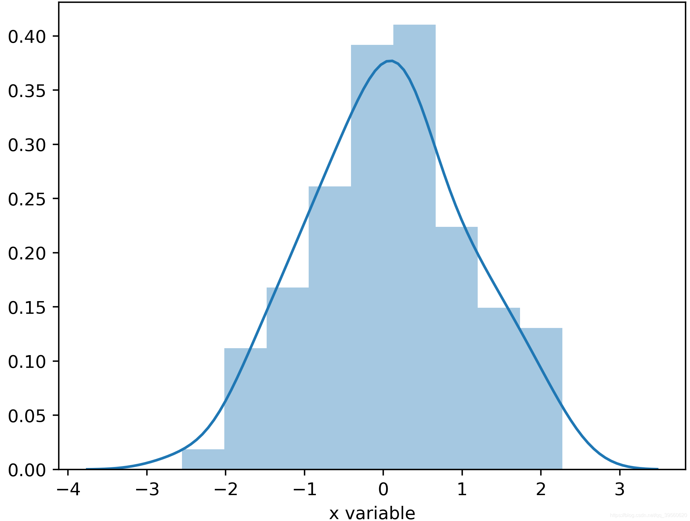

This article mainly includes methods for drawing and saving scatter plots, frequency distribution plots, box plots, heat maps, and multivariable plots.
1. Scatterplot
Plot and saving method
data = sns.load_dataset("tips")
filepath = 'C:/Users'
fig_name = 'scatterplot.png'
# fig_path is the path where you want to save your figure
fig_path = filepath + '/' + fig_name
fig = sns.scatterplot(x = data['total_bill'], y = data['tip'], hue = 'time',
data = data, palette = 'Set1', s = 100)
scatter_fig = fig.get_figure()
scatter_fig.savefig(fig_path, dpi = 400)- sns.scatterplot() draws a scatter plot for seaborn
- s is the marker size
- palette is the color style of the graph
- .get_figure() is to obtain the scatter plot
- .savefig() is to save the scatter plot
- dpi is dots per inch.
where
The resulted scatterplot is as the following:
2. Distplot
Plot and saving method
x = np.random.randn(100)
x = pd.Series(x, name = "x variable")
ax = sns.distplot(x)
hist_fig = ax.get_figure()
hist_fig.savefig(fig_path, dpi = 400)in which sns.distplot() draws the distplot. The resulted scatterplot is as the following:
3. Boxplot
Plot and saving method
fig_dims = (7.5, 4)
fig, ax = plt.subplots(figsize=fig_dims)
fig = sns.boxplot(x = data['tip'], data = data, ax = ax, orient = "h", palette = "Set2")
plt.show()
boxplot = fig.get_figure()
boxplot.savefig(fig_path, dpi=400)- fig_dims = (7.5, 4) controls the width and height of the figure.
- sns.boxplot() draws the boxplot.
where
The resulted boxplot is as the following:
4. Heatmap
Plot and saving method
x = np.array([[1,2,3,4], [2,3,4,6], [10,2,3,6], [8,9,7,3]])
fig_name = 'heatmap.png'
fig_path = filepath + '/' + fig_name
fig = sns.heatmap(x, annot = True)
heatmap = fig.get_figure()
heatmap.savefig(fig_path, dpi = 400)in which sns.heatmap() draws the haetmap. The resulted heatmap is as the following:

5. Pairplot
Plot and saving method
iris = sns.load_dataset("iris")
pairplot_fig = sns.pairplot(iris, kind = 'scatter', hue="species", palette="Set2",
height=2.5, plot_kws=dict(s=50, alpha=0.4))
pairplot_fig.savefig(fig_path, dpi = 400)- sns.pairplot() is a method for drawing multi-variable graphs.
- plot_kws = dict(s = 50, alpha = 0.4) controls the scatter size and color transparency of multi-variables.
where
NOTE: There is no .get_figure() method in .pairplot(). When saving a multivariate plot, call the .savefig() method directly.
The resulted scatterplot is as the following:
Conclusion
For scatter plots, frequency distribution plots, box plots, and heat maps, you can use .get_figure() and .savefig() to save images, while multi-variable graphs only need to use savefig() to save them.
References
This blog is first created in mandarin and posted in CSDN website